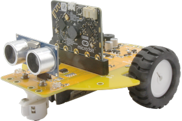

micro:bit 로봇카 보드 - MakeCode 블록 코딩으로 쉽게 배우는 로봇 프로그래밍
A micro:bit robot car board with MakeCode block coding support for easy robot programming education.
Open in MakeCode GitHubControl two DC motors independently. Forward, backward, turn left/right with adjustable speed (0–1023).
Two IR line sensors (left/right) for line tracing. Detects black lines on white surfaces.
HC-SR04 ultrasonic distance sensor. Measure distance in centimeters for obstacle avoidance.
Left and right indicator LEDs. Control individually or together.
Play tones at any frequency. Create melodies and sound effects for your robot.
Control a servo motor (0–180°) on P2. Great for ultrasonic sensor scanning.
https://github.com/pyocodingcompany-crypto/pyobot-makecode and press search.| Function | Pin |
|---|---|
| LED Left / Right | P3 / P4 |
| Buzzer | P0 |
| Line Sensor Left / Right | P6 / P7 |
| Ultrasonic Trig / Echo | P1 / P10 |
| Motor Left (PWM, Dir) | P8, P9, P13 |
| Motor Right (PWM, Dir) | P16, P14, P15 |
| Servo | P2 |
| I2C (SCL / SDA) | P19 / P20 |
PyoBot can be used together with DFRobot HuskyLens AI camera over I2C (P19/P20). No pin conflict — add both extensions to your project for AI-powered robot projects!